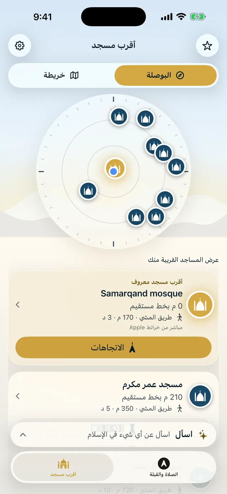
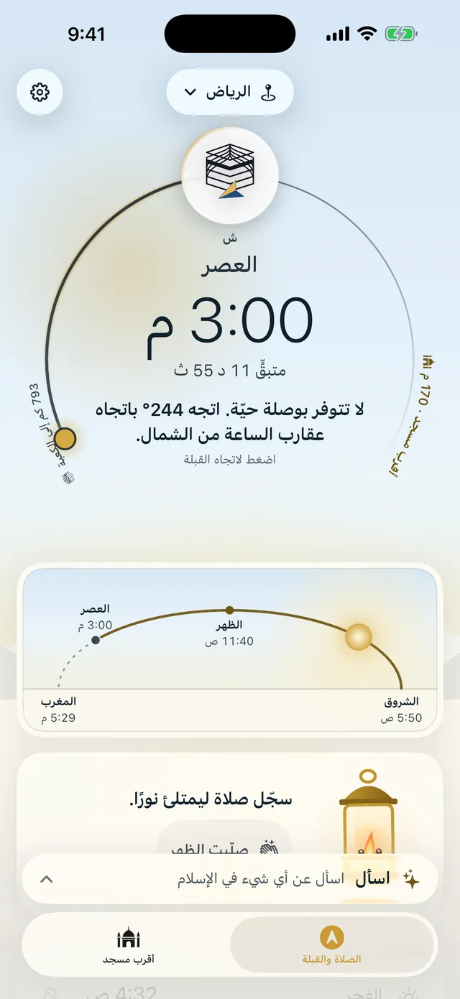
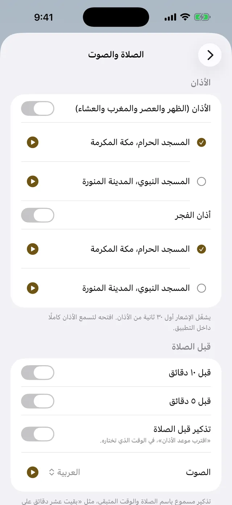
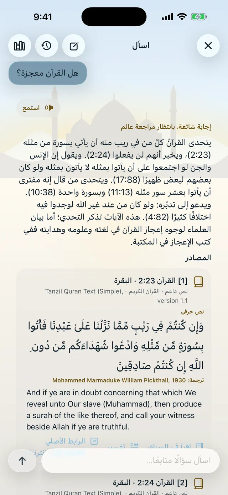

اعرف اتجاه أقرب مسجد وكم يبعد عنك.
بوصلة تعرض كل مسجد في اتجاهه الحقيقي، وخريطة لطريق المشي إليه.
اليوم
القبلة من ريو دي جانيرو
68° من الشمال · 10,248 كم إلى الكعبة
المواقيت لوسط ريو دي جانيرو بطريقة أمريكا الشمالية. أما التطبيق فيحسبها لمكانك بالضبط، وتختار فيه الطريقة التي يتبعها مسجدك.


بوصلة تعرض كل مسجد في اتجاهه الحقيقي، وخريطة لطريق المشي إليه.

مع تذكير قبل كل صلاة، ومنبّه للفجر، وتذكيرات يوم الجمعة.

تقتبس الإجابات من الكتب المحفوظة في هاتفك مع مصدر كل نص، وليست فتوى.
أقرب مسجد
بلا حساب، بلا إعلانات، بلا تتبُّع. والمواقيت والقبلة تعمل دون إنترنت.